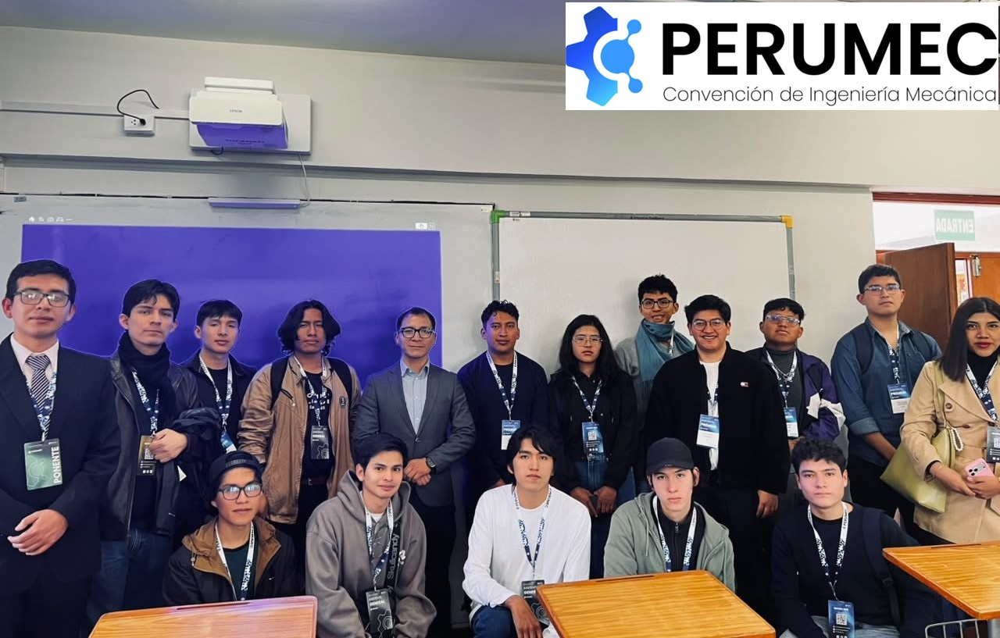
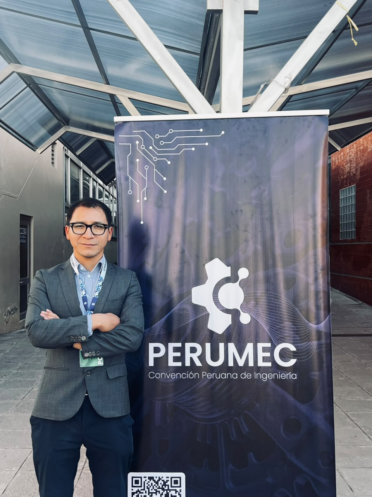
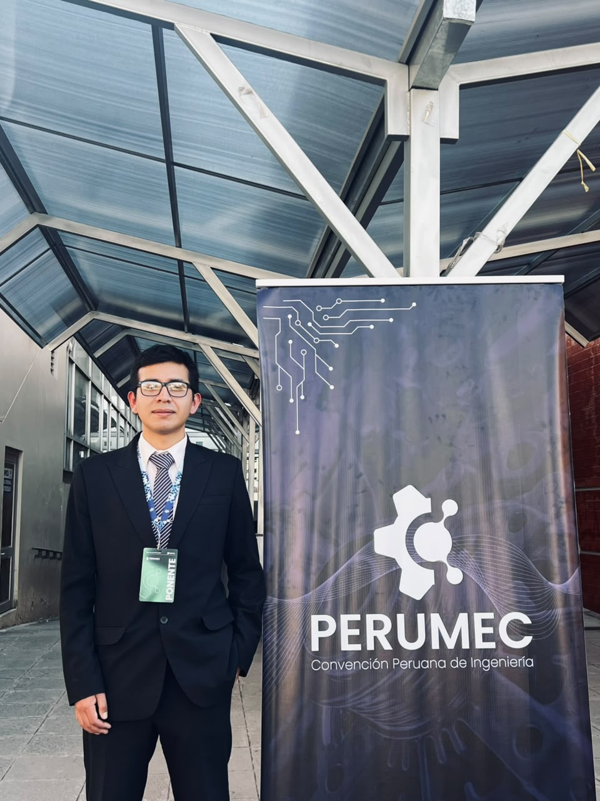
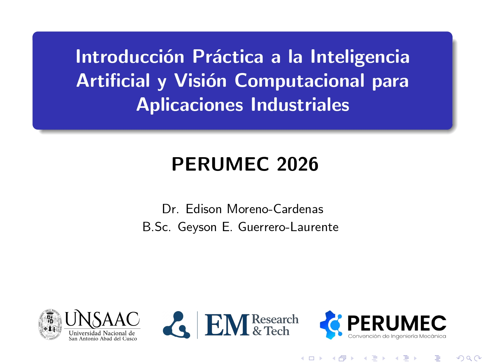

EM Research & Tech at PERUMEC 2026
We are pleased to announce that EM Research & Tech took part in PERUMEC 2026, held at the Universidad Nacional San Antonio Abad del Cusco , where it ran the following workshop:
"Introducción Práctica a la Inteligencia Artificial y Visión Computacional para Aplicaciones Industriales".

Representing EM Research & Tech, Edison Moreno-Cardenas and Geyson E. Guerrero-Laurente guided participants through a practical workflow to develop an industrial computer vision solution using state-of-the-art artificial intelligence tools.
Throughout the workshop, participants explored the entire development process:
- Building and organizing custom datasets.
- Image annotation using Label Studio.
- Training YOLO11 segmentation models.
- Evaluating model performance through confusion matrices, IoU, and mAP metrics.
- Performing real-time inference for industrial applications.
Beyond presenting theoretical concepts, the session emphasized practical implementation, enabling attendees to understand the full lifecycle of an AI-based machine vision system, from data acquisition to deployment.
It was a pleasure to share this experience with students, researchers, and professionals from Peru’s leading universities, fostering collaboration and the exchange of knowledge in artificial intelligence, computer vision, and Industry 4.0 technologies.
We would also like to express our sincere thanks to PERUMEC 2026 for making this opportunity possible.



Workshop Presentation
The presentation used during the PERUMEC 2026 workshop is available here. View Presentation PDF →
At EM Research & Tech, we remain committed to advancing research, innovation, and technology transfer within the scientific and technological ecosystem. We look forward to participating in future initiatives that inspire innovation and empower the next generation of engineers.
#ArtificialIntelligence #ComputerVision #MachineLearning #DeepLearning #YOLO11 #IndustrialAI #Industry40 #Engineering #Research #Innovation #Technology #DataScience #KnowledgeTransfer #STEM #EMResearchAndTech